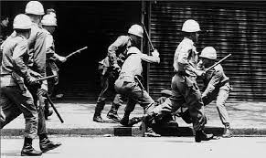

Atuação
A Operação Condor teve sua principal atuação na América do Sul, envolvendo principalmente Argentina, Brasil, Chile, Paraguai, Uruguai e Bolívia. No entanto, também houve cooperação e troca de informações com outros países da região, como Peru, Equador e Colômbia. A cooperação entre as ditaduras incluía a perseguição de opositores políticos além das fronteiras nacionais, facilitando a extradição, sequestro e assassinato de dissidentes em outros países.
Fases
Fase 1(1973-1976)
Nessa fase inicial, a Operação Condor concentrou-se principalmente na repressão interna e na troca de informações entre os regimes ditatoriais. Houve sequestros, torturas e assassinatos de opositores políticos.
Fase 2(1976-1980)
Durante essa fase, houve um aumento da cooperação entre os países envolvidos na operação. A repressão se intensificou, resultando em um número significativo de desaparecimentos forçados e assassinatos. As ditaduras compartilhavam informações de inteligência e realizavam operações conjuntas para capturar e eliminar dissidentes políticos.
Fase 3(1980-1983)
Com a crescente pressão internacional e a transição para a redemocratização em alguns países, a Operação Condor começou a enfraquecer. As ditaduras perderam apoio e suas ações foram expostas ao escrutínio público. A pressão internacional, a resistência interna e a busca por justiça contribuíram para o declínio da operação.
Desdobramentos
Brasil
Durante o regime militar brasileiro (1964-1985), o país teve uma participação ativa na Operação Condor. O regime colaborou com outros países da região, compartilhando informações de inteligência e realizando ações conjuntas para perseguir e eliminar opositores políticos. A ditadura militar brasileira implementou um sistema repressivo brutal, caracterizado por perseguições, prisões arbitrárias, torturas e assassinatos de dissidentes políticos.

A participação do Brasil na Operação Condor incluiu o compartilhamento de informações sobre exilados políticos, resultando em sequestros e entregas para serem torturados e executados em outros países da região. O regime militar brasileiro também atuou internamente na repressão, com a criação de órgãos de repressão como o Departamento de Operações Internas - Centro de Operações de Defesa Interna (DOI-CODI), responsável por perseguir, interrogar e torturar suspeitos de subversão.
-
As violações dos direitos humanos durante o período ditatorial deixaram um legado de trauma coletivo no Brasil. O país enfrenta até os dias de hoje os desdobramentos socio-históricos desse período, com famílias buscando a verdade sobre o destino de seus entes queridos desaparecidos e demandando justiça pelos crimes cometidos.
-
Desde o fim da ditadura, o Brasil passou por um processo de redemocratização e estabeleceu mecanismos para investigar e responsabilizar os perpetradores das violações dos direitos humanos. Foram criadas comissões de verdade, como a Comissão Nacional da Verdade, para investigar as violações cometidas durante o regime militar e revelar a verdade sobre os acontecimentos.
-
No entanto, os desafios persistem, pois muitos crimes ainda permanecem impunes e a busca por justiça continua. A sociedade civil e as organizações de direitos humanos desempenham um papel fundamental na luta por verdade, justiça e reparação, exigindo que os responsáveis sejam levados a julgamento e que a memória das vítimas seja preservada.
-
O legado da Operação Condor no Brasil inclui a necessidade contínua de enfrentar o passado autoritário, promover a justiça de transição e garantir que violações semelhantes aos direitos humanos nunca mais ocorram. A construção de uma sociedade democrática e inclusiva é um objetivo fundamental para o Brasil, impulsionando esforços para lidar com as consequências históricas dessa época sombria.
Chile
O golpe militar no Chile em 1973, liderado pelo general Augusto Pinochet, marcou o início da participação do país na Operação Condor. O golpe derrubou o governo democraticamente eleito do presidente Salvador Allende e instalou uma ditadura militar que durou até 1990. Durante os primeiros anos da ditadura de Pinochet, ocorreram milhares de assassinatos, desaparecimentos forçados, prisões e torturas.
-
A participação do Chile na Operação Condor envolveu a colaboração com outros países da região para perseguir e eliminar opositores políticos. O regime de Pinochet compartilhou informações de inteligência com outros países participantes e cooperou na captura e extradição de dissidentes políticos que haviam buscado refúgio em outros países. Isso resultou em sequestros e execuções de opositores políticos em diferentes partes do continente.
-
A repressão durante a ditadura chilena foi particularmente violenta, com a criação de centros de detenção e tortura, como a infame Villa Grimaldi e o Estádio Nacional, onde milhares de pessoas foram detidas, interrogadas e torturadas. Muitos foram executados ou desapareceram, deixando um legado de sofrimento e trauma na sociedade chilena.
-
Após o término da ditadura, o Chile passou por um processo de transição para a democracia e iniciou a busca por verdade, justiça e reconciliação. A criação da Comissão Valech, em 2003, foi um marco importante, pois permitiu a identificação e o registro de milhares de vítimas de violações dos direitos humanos durante a ditadura. No entanto, a busca por justiça tem sido um processo complexo e desafiador, com muitos crimes ainda impunes e vítimas em busca de reparação.
-
A sociedade chilena continua a enfrentar os desdobramentos socio-históricos da Operação Condor. Há um esforço contínuo para responsabilizar os perpetradores, promover a memória das vítimas e garantir que os horrores do passado não sejam esquecidos. A luta por justiça e reparação tem sido conduzida por organizações de direitos humanos, vítimas e seus familiares, bem como por uma parte significativa da sociedade chilena comprometida com os princípios da justiça e da democracia.
-
A memória coletiva do período da ditadura permanece viva no Chile, refletindo-se em monumentos, museus e espaços de memória, como o Museu da Memória e dos Direitos Humanos, em Santiago. A busca por um país mais inclusivo e respeitoso dos direitos humanos continua sendo um objetivo central para a sociedade chilena, buscando evitar que os horrores do passado se repitam e construindo um futuro baseado na justiça e na dignidade para todos.
Argentina
Durante a ditadura militar argentina, que teve início em 1976, a participação na Operação Condor foi especialmente intensa. Sob o regime militar liderado pelo general Jorge Rafael Videla, ocorreu um período conhecido como "Processo de Reorganização Nacional". Durante esse período, a repressão estatal foi implementada de forma brutal, resultando em milhares de desaparecimentos forçados, torturas e assassinatos de opositores políticos.
-
A Argentina se destacou na Operação Condor, contribuindo com informações e colaborando ativamente com outros países da região para perseguir e eliminar dissidentes políticos. A cooperação entre as ditaduras permitiu o sequestro e a transferência de prisioneiros políticos entre os países envolvidos. Centros clandestinos de detenção e tortura, como a famosa Escola de Mecânica da Marinha (ESMA), foram utilizados para interrogar, torturar e assassinar aqueles considerados "subversivos".
-
Após o fim da ditadura argentina, em 1983, o país embarcou em um longo processo de recuperação democrática e justiça. A partir da década de 1990, começaram a surgir os primeiros esforços para investigar os crimes cometidos durante a ditadura. No início do século XXI, ocorreram importantes julgamentos de crimes contra a humanidade, onde diversos militares e membros do aparato repressivo foram condenados e responsabilizados por suas ações.
-
Os desdobramentos socio-históricos da Operação Condor na Argentina envolvem a busca por verdade, justiça e memória das vítimas. Organizações de direitos humanos e familiares das vítimas têm desempenhado um papel fundamental na luta por responsabilização e preservação da memória histórica. O tema da memória também foi abordado com a criação de espaços de memória, como o Parque da Memória, em Buenos Aires, e a ESMA, transformada em um Museu da Memória.
-
O legado da Operação Condor na Argentina permanece vivo na sociedade, com um contínuo debate sobre o papel das Forças Armadas e o respeito aos direitos humanos. A luta pela justiça e pelos direitos humanos continua sendo uma parte importante da identidade argentina e da busca por uma sociedade mais justa e democrática.